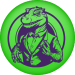

Give it your best shot!
Rock-Paper-Scissors-Lizard-Spock is an engaging extension of the classic game Rock-Paper-Scissors, designed to reduce the frequency of ties and introduce more strategic play. The game was popularized by Sam Kass and Karen Bryla and gained widespread recognition through its appearance on the TV show "The Big Bang Theory."